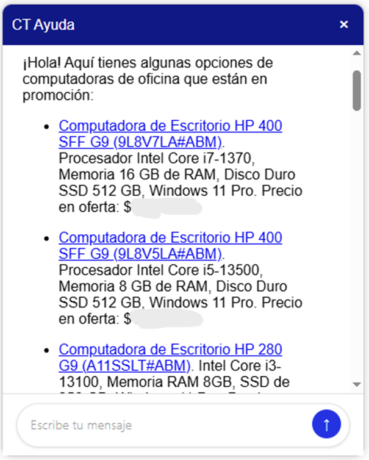
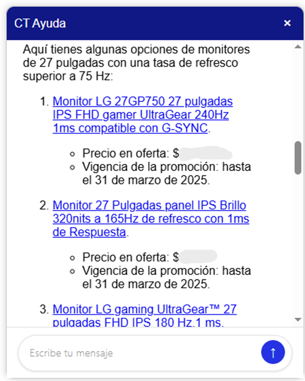
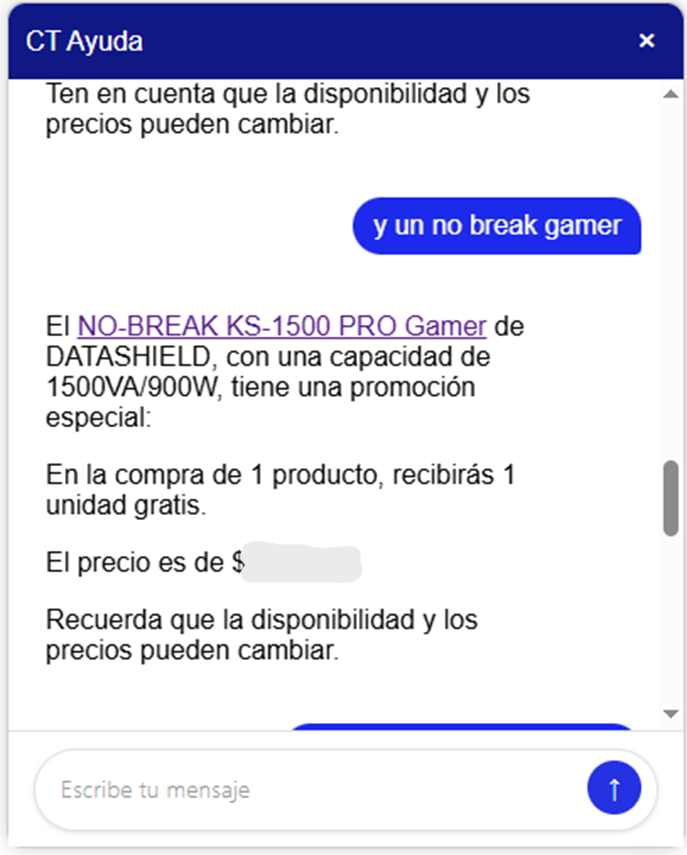
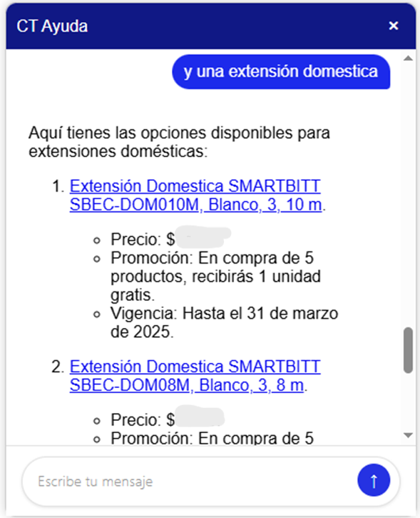

Modelado y Evaluación
1 Modelado
El objetivo de esta fase es desarrollar la arquitectura del sistema de recuperación aumentada con generación (RAG) y las herramientas que utilizará el chatbot para la información dinámica. Para ello, se utiliza como fuente de conocimiento la base de datos vectorizada construida en la etapa anterior.
1.1 Modelos
Dado que el enfoque del proyecto se basa en herramientas de OpenAI, los modelos considerados para esta fase son los siguientes:
GPT-4o-mini:
Una versión ligera de GPT-4o, diseñada para ofrecer un buen balance entre costo, velocidad de respuesta y calidad en tareas de lenguaje natural. Es ideal para pruebas rápidas o implementaciones donde se requiere eficiencia.GPT-4o:
Modelo multimodal de última generación de OpenAI, capaz de procesar texto, imágenes y audio. En este proyecto se utiliza solo su capacidad textual, destacando por su mayor comprensión semántica y coherencia en las respuestas.Modelos open-source integrados mediante Ollama:
Ollama permite correr modelos de lenguaje open-source de manera local o privada. En este proyecto se contemplan modelos como LLaMA o Mistral, que ofrecen alternativas de código abierto con buen rendimiento en tareas conversacionales.
1.2 Arquitectura del sistema
La implementación del sistema se basa en una estructura modular orientada a clases. Esto permite una mayor reutilización de código, facilita su mantenimiento y mejora la legibilidad, aspectos clave para futuras modificaciones o revisiones.
Además, esta estructura permite importar únicamente la clase necesaria para ejecutar todo el sistema, lo cual es ideal para su integración a través de una API. De esta forma, se evita depender de notebooks o archivos extensos y poco escalables.
El sistema se construyó utilizando principalmente la librería LangChain, la cual ofrece una base robusta para conectar modelos de lenguaje con herramientas externas y flujos personalizados.
1.2.1 Información estática
A partir de los datos mencionados en el apartado anterior, procederemos a crear la base de datos vectorial con esta información. Tomamos los datos limpios y transformados directamente de las funciones de limpieza (clean_products y clean_sales en ct/ETL/transform.py) y los convertimos en un tipo Document para poder pasarlo a FAISS (base vectorial) junto con los embeddings y guardarlo de forma local.
campos = [
"nombre",
"producto",
"categoria",
"marca",
"tipo",
"modelo",
"detalles",
"fichaTecnica",
"resumen"
]
docs = [
Document(
page_content=construir_contenido(producto, campos), # recibe la información de cada producto y las columnas
metadata={"collection": 'promociones'} # o 'productos' dependiendo el caso
)
for producto in productos
]
# Usar embeddings de OpenAI
embeddings = OpenAIEmbeddings(api_key=api_key)
# Crear base de datos FAISS con los documentos
vectorstore = FAISS.from_documents(docs, embeddings)
# Guardar la base de datos para futuras consultas
vectorstore.save_local()1.2.2 Información dinámica
Además de la información estática precargada en la base vectorial, el sistema cuenta con herramientas dinámicas que permiten consultar datos actualizados en tiempo real, como existencias, precios y promociones. Estas herramientas se integran al agente a través del framework LangChain, lo que permite invocarlas solo cuando el modelo detecta que son necesarias para responder con precisión.
Las herramientas dinámicas disponibles son:
search_information_tool: realiza búsquedas básicas en los productos embebidos para encontrar coincidencias.inventory_tool: consulta las existencias, precio actual y moneda para un producto específico.sales_rules_tool: calcula promociones y reglas de venta que aplican a un producto según su lista de precios y sucursal.
self.tools = [
Tool(
name='search_information_tool',
func=search_information_tool,
description="Busca productos relacionados con lo que se pide."
),
StructuredTool.from_function(
func=inventory_tool,
name='inventory_tool',
description="Esta herramienta sirve como referencia y devuelve precios, moneda y existencias de un producto por su clave y listaPrecio.",
args_schema=ExistenciasInput # Explicitly link the Pydantic schema
),
StructuredTool.from_function(
func=sales_rules_tool,
name='sales_rules_tool',
description="Aplica reglas de promoción, devuelve el precio final y mensaje para mostrar al usuario.",
args_schema=SalesInput
)
]Estas herramientas son invocadas automáticamente por el agente cuando la consulta del usuario requiere información que no está contenida en el contexto estático. Esto permite entregar respuestas más precisas y alineadas con la situación real del negocio (existencias, promociones activas, etc.).
1.2.3 Flujo de datos para el sistema RAG
El sistema se alimenta con información a través de un proceso ETL (Extracción, Transformación y Carga) que asegura que los datos estén limpios, estructurados y listos para ser utilizados por el modelo y las herramientas.
Para una descripción detallada de cada etapa del proceso ETL, incluyendo la extracción de datos, la transformación (y el almacenamiento de fichas técnicas en MongoDB), y la carga directa a la base de datos vectorial, por favor, consultar el documento “Preparación de los datos”.
En resumen, este proceso garantiza que el modelo tenga acceso a una base de datos de conocimiento robusta y actualizada, tanto estática (productos y promociones embedidas) como dinámica (a través de las herramientas que consultan datos en tiempo real).
1.3 Atributos del modelo y contexto de ejecución
Durante la ejecución del sistema, los modelos de lenguaje no operan en aislamiento. Se alimentan con diversos atributos y herramientas que enriquecen la interacción y permiten generar respuestas precisas y contextualizadas. A continuación, se describen los principales elementos que intervienen en este proceso y cómo la información preparada se integra en el modelo:
Atributos del modelo en tiempo de ejecución
query: Pregunta o instrucción directa del usuario. Es el punto de entrada para iniciar el procesamiento.session_id: Identificador de sesión que permite obtener el contexto del usuario (incluye la sucursal asociada para aplicar reglas de negocio como promociones).listaPrecio: Parámetro numérico que indica la lista de precios relevante para consultas de productos y promociones.
Estos atributos permiten personalizar las respuestas con base en el usuario que consulta, su sucursal, y las reglas comerciales que le aplican.
Alimentación del modelo con información adicional
El LLM se alimenta con información contextualizada de dos maneras principales, ambas derivadas de los datos procesados en la fase de Preparación de los Datos:
Información estática (a través del RAG):
- Proviene de la base de datos vectorial (FAISS) construida con los productos y promociones previamente embedidos mediante
OpenAIEmbeddings. - Cuando el usuario realiza una
queryrelevante, el sistema RAG busca los documentos más similares en el vector store. Estos documentos (page_contentymetadata) se inyectan en el context window del LLM como información de referencia. - Esto se activa principalmente para consultas generales de productos, descripciones, características, comparativas, etc., permitiendo al LLM generar respuestas basadas en un conocimiento específico y actualizado de tu catálogo.
- Proviene de la base de datos vectorial (FAISS) construida con los productos y promociones previamente embedidos mediante
Información dinámica (a través de herramientas LangChain):
- Se accede a datos en tiempo real mediante herramientas personalizadas integradas con LangChain, como
inventory_toolysales_rules_tool. - El LLM, basado en la
querydel usuario y su propio razonamiento, decide cuándo invocar estas herramientas. Por ejemplo, si el usuario pregunta por “el precio de la clave X”, el LLM activaráinventory_toolcon la clave proporcionada. - El resultado de la ejecución de estas herramientas (e.g., el precio actual, las existencias, el precio final con promoción) se devuelve al LLM y se inyecta también en su context window.
- Esto permite al LLM generar respuestas con datos actualizados y específicos, como la disponibilidad de un producto o el precio final con promociones activas para una
listaPrecioysession_iddados.
- Se accede a datos en tiempo real mediante herramientas personalizadas integradas con LangChain, como
Moderación y clasificación de la consulta
Antes de ejecutar cualquier acción, la consulta pasa por una etapa de moderación:
- Se valida si el usuario está baneado (por comportamiento inapropiado).
- Se clasifica la consulta como
relevante,irrelevanteoinapropiada. - Dependiendo de esta clasificación, se permite o bloquea el paso al modelo principal y las herramientas.
Este flujo asegura robustez, control y trazabilidad en la interacción con el modelo.
1.4 Métricas de evaluación
A diferencia de los modelos clásicos de machine learning (ML), la evaluación de sistemas basados en modelos de lenguaje grande (LLMs) requiere enfoques distintos, centrados en la calidad de las respuestas generadas.
En este proyecto, la evaluación se realiza mediante un análisis cualitativo de las respuestas del chatbot, tomando en cuenta los siguientes criterios:
- La información sobre productos, descripciones y características debe estar alineada con los datos disponibles en la base vectorial.
- Las respuestas deben ser claras, concisas y coherentes, evitando alucinaciones o información incorrecta.
- Los precios deben coincidir con los establecidos en la base de datos, y en el caso de promociones, estas deben estar correctamente aplicadas, evitando errores que impliquen pérdidas económicas.
Estos criterios serán evaluados por los expertos y personas con conocimiento en la empresa.
2 Evaluación
Con base en las respuestas generadas durante la etapa de modelado, se llevó a cabo una evaluación cualitativa para analizar la coherencia, relevancia y precisión de las recomendaciones de cada modelo. Este análisis nos permitió identificar oportunidades de mejora en el sistema, así como validar si el comportamiento del modelo es adecuado para continuar con su implementación o si requiere ajustes adicionales.
A continuación, se presentan las respuestas generadas por el sistema para una serie de consultas simuladas por un usuario. Estas imágenes muestran el resultado del mejor modelo seleccionado (GPT 4o) ante cada solicitud:
Consulta: “¡Hola! Me interesan computadoras de oficina”
Consulta: “También me gustaría ver monitores de 27 pulgadas arriba de 75Hz”
Consulta: “Y un no break gamer”
Consulta: “Y una extensión doméstica”

Los resultados obtenidos reflejan un desempeño sólido por parte del sistema. En todos los casos evaluados, las respuestas del chatbot fueron coherentes, alineadas con la base de datos y cumplieron con los criterios definidos:
- Las ofertas y promociones fueron correctamente identificadas y presentadas.
- Los precios y descripciones de los productos coincidieron con los datos reales.
- No se observaron errores de alucinación ni pérdidas de coherencia en la conversación.
Esto sugiere que el modelo es capaz de generar respuestas confiables y útiles para los usuarios, por lo que se considera viable continuar con las siguientes etapas del proyecto o bien escalar el sistema hacia una versión de prueba.